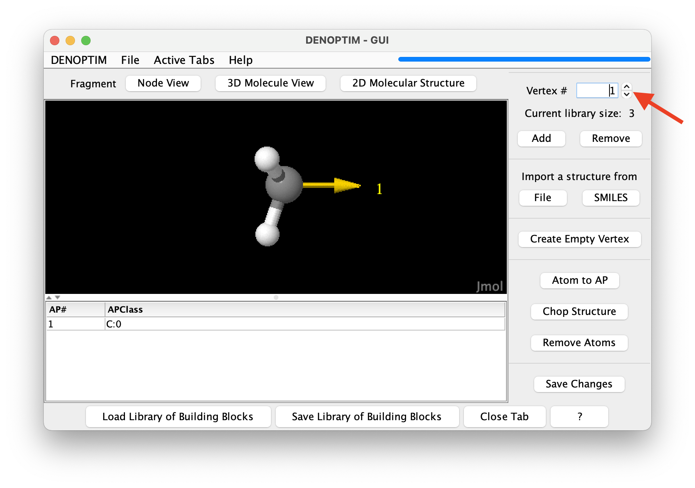
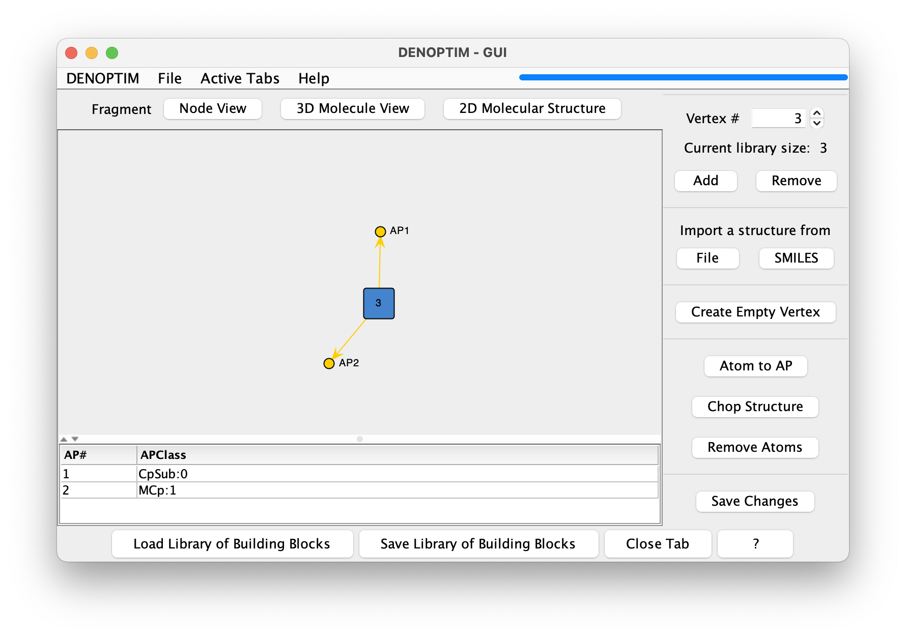
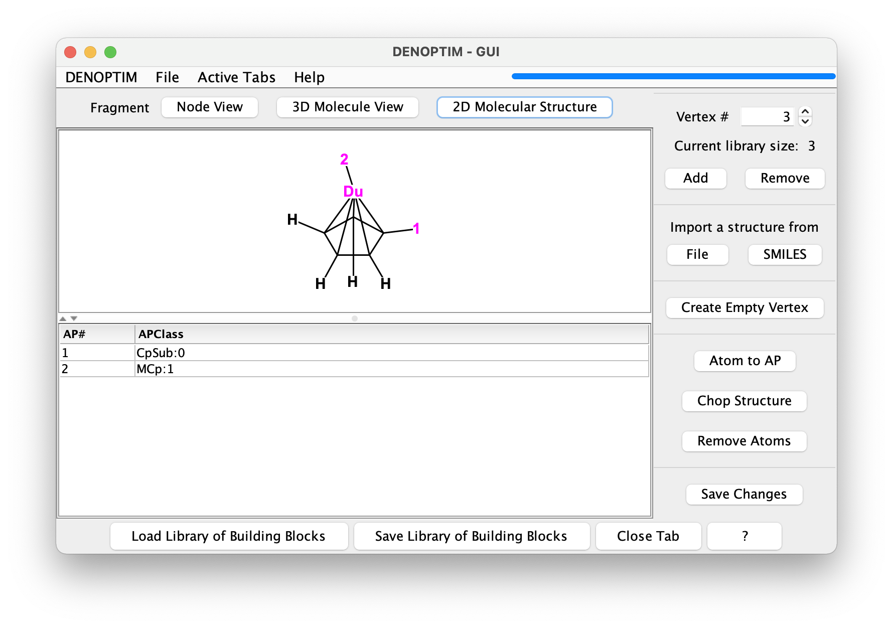
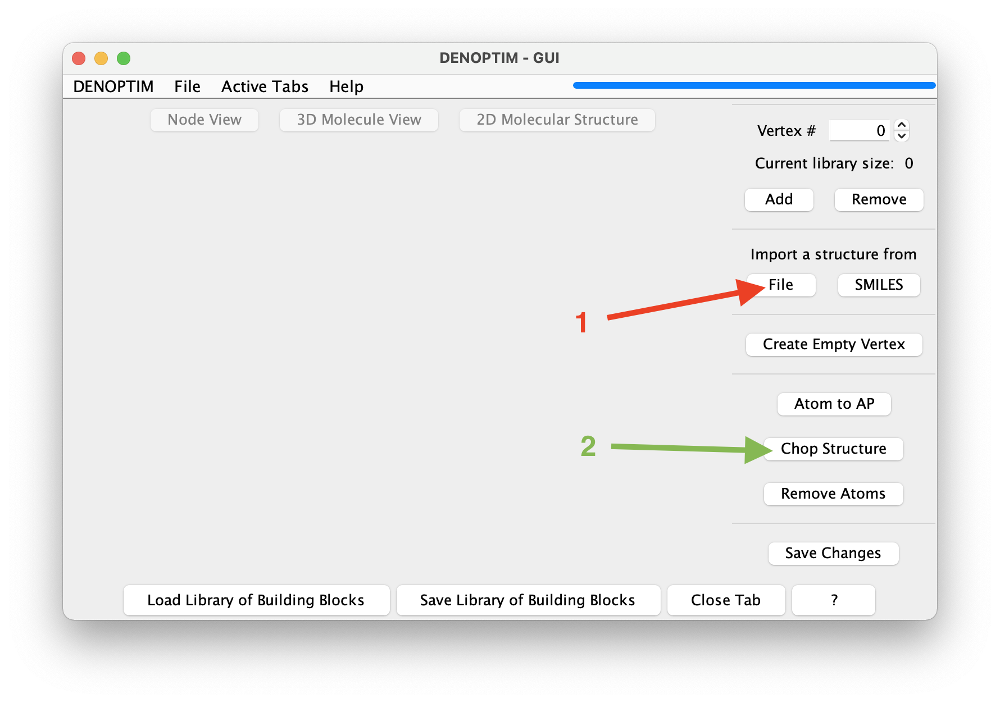
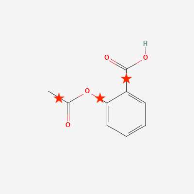
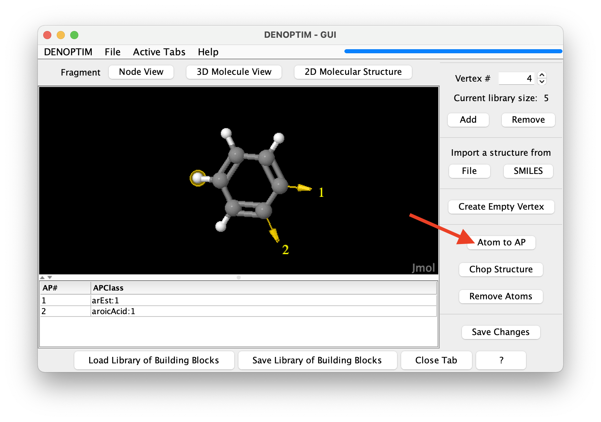
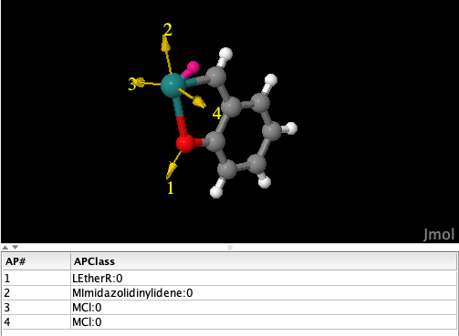
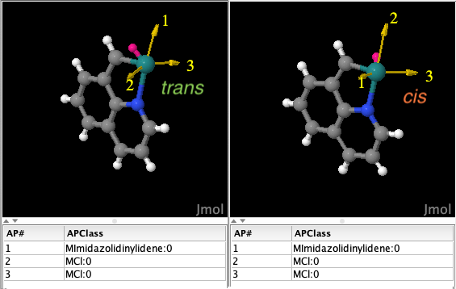

Tutorial 1.0: Molecular Fragments
The fundamental concept in DENOPTIM’s world is that chemical objects, such as molecules and materials, are made of building blocks that can be attached to form a Graph-like structure. Building blocks are, therefore, called Vertices or Nodes of the graph that defines a chemical object. The most intuitive type of building block is a molecular fragment. Molecular fragments can contain one or more atoms and bonds, and are decorated with attachment points. Attachment points define how molecular fragments can be used to build larger chemical objects by attaching fragments to each other.
Visualize Molecular Fragments
Open DENOPTIM’s GUI and choose
File->Openthen navigate to open the filetutorial_1.0/fragments-1.sdffrom the unzipped downloaded dataset. The same file can be opened directly in the command line by issuing the following command from within the folder created when unzipping the downloaded dataset:denoptim tutorial_1.0/fragments-1.sdf
The graphical interface will open a window and display the fragments contained in the file.

Figure 1: The graphical representation of a molecular fragment. The red arrow indicates the spinner used to navigate the list of fragments.
Use the mouse to rotate the three-dimensional molecular representation of the fragment (click and drag).
Molecular fragments can have any number of atoms and any number of attachment points (the yellow arrow in the three-dimensional representation), each of which defined the possibility to bind another building block. The attachment point is decorated by a string, i.e., the so-called Attachment Point Class (APClass), that is used to control how attachment points can be used to connect fragments. For clarity, the APClass is declared in the table below the three-dimensional representation of the fragment.
Use the spinner in the top-right part of the window (see in red arrow figure above) to navigate to the next fragments and backwards. Navigate to the third fragment.
Fragments can also contain pseudoatoms/dummy atoms, as shown in the third fragment: a cycplopentadienyl fragment that offers the possibility to host a substituent different from H on one of the carbon atoms. Note the dummy atom placed at the centroid of the ring: it is used to hold the attachment point that represents the capability to use such fragment to bind a metal atom in hapto-5 mode (η5).
Click on the
Node Viewbutton to show what each fragment represents in terms of graph building blocks.Each molecular fragment represents a single vertex that can be used as a building block for a graph. The chemical content, i.e., the number and identity of the atoms and bonds, is not relevant when perceiving molecular fragments as graph building blocks. Instead, what defines the characteristics of the vertex is the set of attachment points, each with its own APClass.

Figure 2: The Node View representation of a vertex.

Figure 3: The 2D Molecular Structure representation of a vertex.
Make Fragments in the GUI
We will now make new molecular fragments that we could use as building blocks. To exploit the existing chemical knowledge we will make such molecular fragments by fragmenting (that is, chopping up) a known compound. Click on
File->New->New Molecular Fragmentsto open a new vertex inspector tab. Then click on the dedicated button to Import a structure fromFile(see red arrow in the figure below) and select filetutorial_1.0/aspirin.sdf.
Figure 4: Buttons used to import a structure from file (red arrow) and launch the fragmentation (green arrow).
Once the molecule is displayed, you can click on
Chop Structure(see green arrow in the figure above) to start the automated generation of fragments. This will open a new window that offers the possibility to control the cutting rule, i.e., the rules defining how the structure should be cut (see below). Click onStart fragmentationto accept the defaults.The result will be a set of 4 new fragments obtained by cutting the bonds marked by a star in the following figure. Once we confirm to import all of them, these fragments will be loaded in the current vertex inspector tab.

Figure 5: Bonds identified by the default cutting rules and cut Buttons used to import a structure from file (red arrow) and launch the fragmentation (green arrow).
The set of fragments and the APClass on the attachment points of the generated fragments are the result of the cutting rules. A single cutting rule is a substructure pattern that defines which bonds are broken by a specific cutting rule and what is the APClass of the resulting attachment points. Further details are available in the dedicated documentation and publication (J. Chem. Inf. Model. 2014, 54, 7, 1919–1931). In brief, each cutting rule is expressed as a SMARTS resulting by the combination of the components dedicated to the bond it self and the atoms connected by such bond. The cutting rule can be inspected in the dialog shown when clicking on the
Chop Structurebutton.Attachment points can also be generated manually. Select one or more terminal atoms by clicking on them, and click on the
Atom to APbutton (see red arrow in the figure) to transform one or more atom in attachment points. A dialog will allow to specify the APClass of the resulting attachment points.
Figure 6: Selection of an atom to be converted into an attachment point by clicking on the button identified by the red arrow.
Run Fragmenter Jobs from Command Line
Fragmentation of many structures is more efficiently performed by running DENOPTIM’s Fragmenter from the command line. Moreover, the Fragmenter offers more functionality that what possible in manual fragmentation:
apply filtering criteria to the structures to be fragmented,
remove duplicate fragments,
apply filtering criteria on generated fragments,
identify the most representative conformations of a molecular fragment.
This tutorial will take structures from the Crystallography Open Database and chop them to generate and organise fragment automatically. In general, the source of the geometries can be any database of mono-, bi-, and three-dimentional structures, such as any crystallography database, or any database of computed structures. In this specific example, out goal is to collect three-dimensional fragments of chelated Ru-alkilydene complexes, which might be used to design Ru catalyst for olefin metathesis.
Collect the structures from which to generate fragments. For this exercise the structures are already collected in file
tutorial_1.0/structures_from_COD.ciffrom the downloaded dataset.The structures used here can be obtained from the Crystallography Open Database: 4064102, 4064965, 4064964, 4064967, 4068123, 4068964, 4068965, 4068966, 4075179, 4075180, 4110988, 1504708, 1504709, and 4064690.
The settings of the Framenter are collected in an input file prepared according to the user manual. An example of such file is available as
tutorial_1.0/fragmentation.params. The content is the following:FRG-StructuresFile=structures_from_COD.cif FRG-CuttingRulesFile=cutting_rules FRG-RetainSMARTS=[Ru] FRG-RejectSMARTS=[#6]~[Ru]~[#6] FRG-IsomorphicSampleSize=20 FRG-ClusterizeAndCollect=centroids
In this specific case, we ask the Fragmenter to chop the structures found in file
structures_from_COD.cifusing the cutting rules available in filecutting_rules. In addition, we ask to keep only fragments that contains at least one ruthenium atom (line 3 in the example above) while not containing any chain of atoms matching the carbon-(any bond)-ruthenium-(any bond)-carbon patterns (line 4 in the example above). These constrains reflect the desire to collect only Ru-containing fragments that do not contain partially fragmented systems, which would contain more than one organometallic bond to Ru. Line 5 and 6 control the identification of the most representative fragments. Namely, fragments are to be collected in samples of isomorphic fragments, i.e., fragments with the same graph structure of atoms and attachment points, but not necessarily the same geometry. Effectively, isomorphic fragments have the same constitution of atoms and attachment points, but potentially different stereochemistry. The sampling of isomorphic fragment families will consider up to 20 fragments (line 5). For each such sample, the Fragmenter will then run a clustering analysis based on the RMSD of atomic positions upon frozen-geometry superposition to discriminate isomorphic fragments with different geometry and will return the centroid of each such cluster as the most representative fragment of the cluster (line 6).Run the fragmentation from within the
tutorial_1.0folder using this command:denoptim -r FRG fragmentation.params
A new folder will be created with name
FRGYYYYMMDDHHMMSSwhereYYYYMMDDHHMMSSis the time stamp. Log files tracking the workings of the process, and files collecting intermediate data are contained in this folder. In particular, the final collection of the most representative fragments, i.e., the centroid of each cluster of isomorphic fragments, is saved in fileFRGYYYYMMDDHHMMSS/Fragments.sdf. It is convenient to open such file in the graphical user interface to inspect the results (NB: replace YYYYMMDDHHMMSS with the appropriate values for your case):denoptim FRGYYYYMMDDHHMMS/Fragments.sdf
Note that the fragment corresponding to the chelating ortho-alkoxybenzylidene (Figure 7) is the centroid of a cluster collecting a handful of isomorphic and geometrically similar fragments. This information can be found in the
ConformerExtractorTask-\*_IsomorphicFamily_\*.logfiles. The centroid is calculated averaging all atomic positions, thus the noise due to small distortions in the geometries is attenuated.
Figure 7: Fragment obtained as the cluster centroid for ortho-alkoxybenzylidene-chelated ruthenium centers. The atom in magenta is a dummy atom added by DENOPTIM to facilitate the manipulation of linearities around the metal center.
Moreover, note that the isomorphic but geometrically diverse fragments in Figure 8 are collected separately as they belong to two different geometry clusters of the same sample of isomorphic fragments.

Figure 8: isomorphic but geometrycally different fragments, i.e., these fragments have the same constitution but different configuration at the Ru center: trans for the fragment on the left, cis for that on the right. The atom in magenta is a dummy atom added by DENOPTIM to facilitate the manipulation of linearities around the metal center.